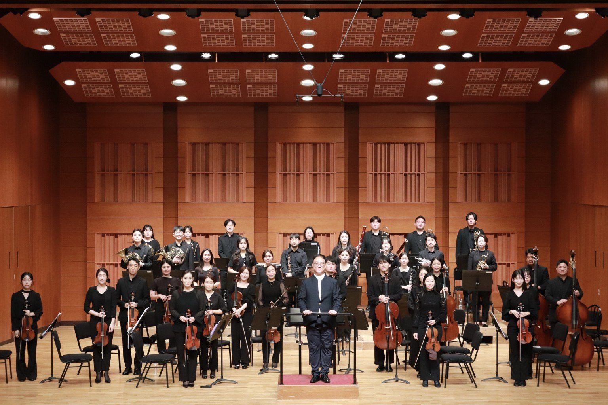
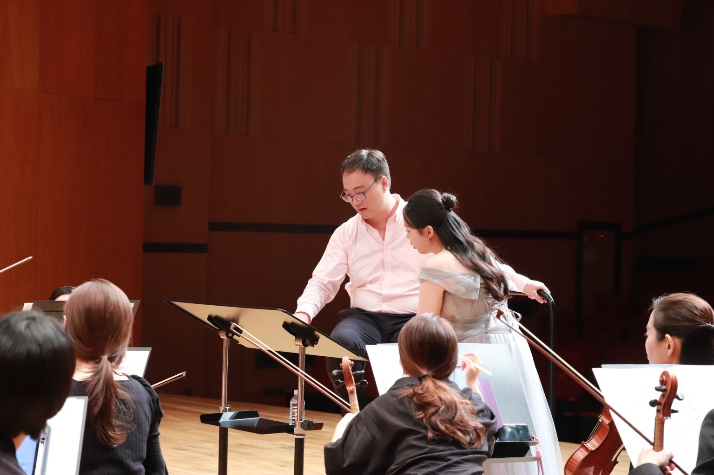
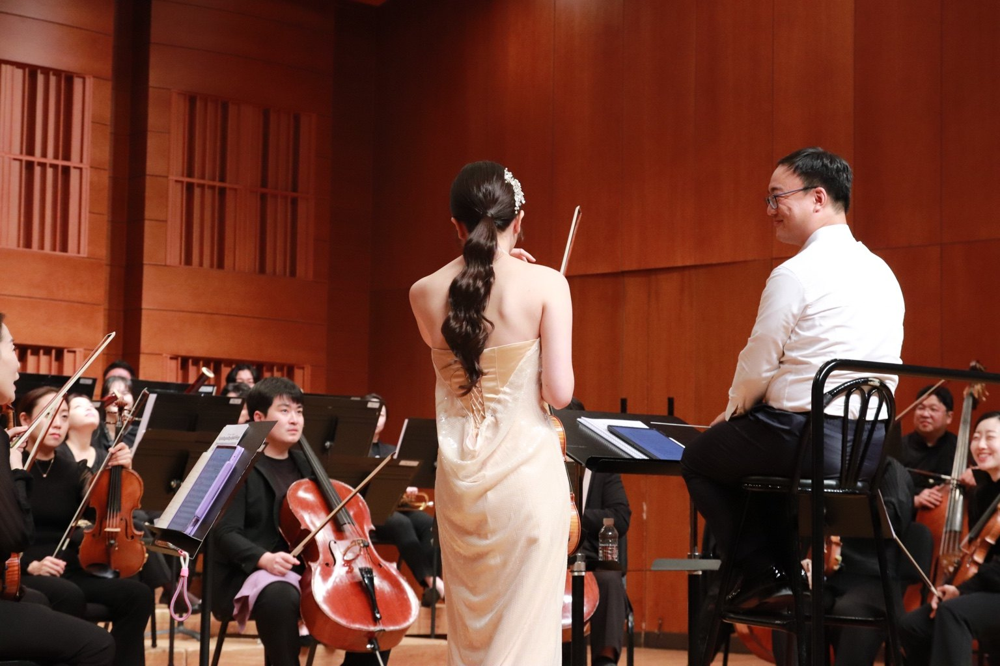
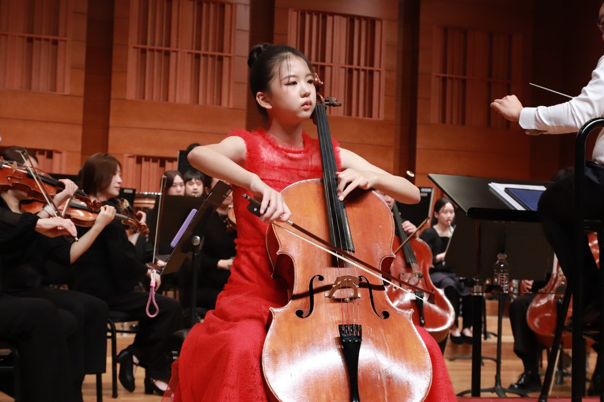
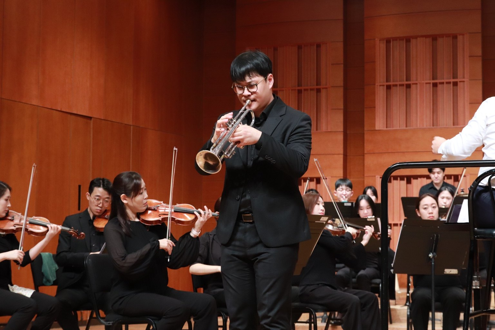

17 OCTOBER 2025 · ORCHESTRA LARTIFE PRODUCTION
Fall in Concerto
A Night of Concertos
- Date
- 17 October 2025 · 7:30 PM
- Venue
- Kwanglim Arts Center · Jangcheon Hall
- Conductor
- Panju Kim
- Orchestra
- Orchestra Lartife

About
Conceived and produced by Orchestra Lartife, this concerto-centered program brought clarinet, flute, trumpet, cello, and violin soloists together with a professional orchestra. The evening revealed the distinct colors of each instrument and the individuality of every performer within one continuous concert experience.
SELECTED REPERTOIRE
Program
C. M. von WeberDer Freischütz Overture
W. A. MozartClarinet Concerto in A major, K.622 - I
F. DevienneFlute Concerto No.2 in D major - I
V. PeskinTrumpet Concerto No.1 in C minor - I
O. BöhmeTrumpet Concerto in F minor, Op.18 - I
E. ElgarCello Concerto in E minor, Op.85 - IV
V. PeskinTrumpet Concerto No.3 in F minor
J. SibeliusViolin Concerto in D minor, Op.47 - I
PERFORMANCE ARCHIVE
Gallery




Original Program Book
VIEW PDF ↗